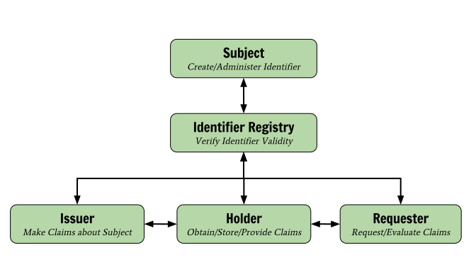
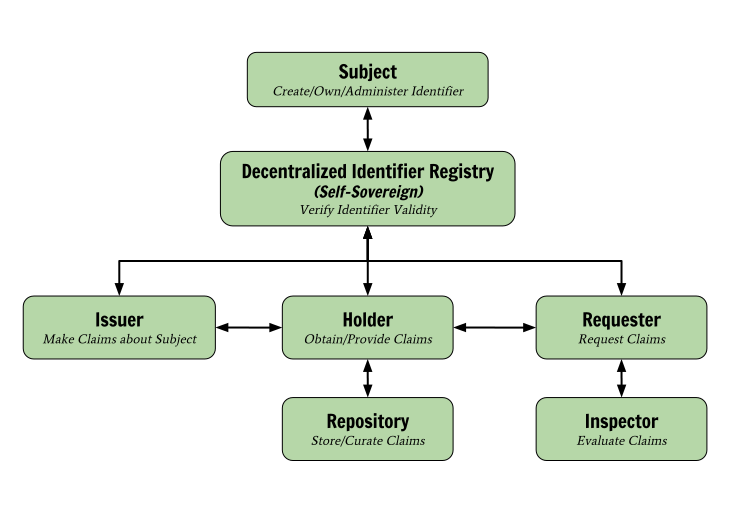

A self-sovereign architecture for verifiable claims is one
where the holder of a verifiable claim is in complete control of their
identifier, where their verifiable claims are stored, and how they are used.
There is currently no widely used self-sovereign, privacy-enhancing standard
for expressing and transacting verifiable claims (aka: credentials,
attestations) via the Web. This a summary of an architecture that aspires to
address part of this problem.
Proposed Verifiable Claims Architecture Goals
Enhance website usability by removing the need to manually enter verifiable claims
Reduce fraud by creating a standard way to share verifiable qualifications
Ensure maximum privacy in claims sharing mechanism
Separate production and control of an identifier from the production of claims associated with the identifier
Separate control of claims sharing from creation of claims
Develop standards for interactions between architectural roles, independent of market vertical
Re-use existing protocols where appropriate
Basic Architecture Block Diagram
A basic architecture for verifiable claims must distinguish the essential
roles of core actors and the relationships between then; how do they interact?
A role is an abstraction that might be implemented in many different ways. The
separation of roles suggests likely interfaces and/or protocols for
standardization. The basic verifiable claims architecture separates the
basis for identification, the generation of claims associated with an
identifier, and the processes for managing and using claims:

Fig. 1 - The basic Verifiable Claims architecture
Although claims mechanisms already exist, they suffer a
number of inherent limitations, mostly caused by tight integration between
the production of an identifier and the production of claims, and/or the
production of claims and the storage of claims. The proposed basic architecture
decouples the production of an identifier, the production of claims, and the
storage/usage of claims. This ensures a more modular, flexible, and
competitive ecosystem.
Basic Architecture Terminology
Claim
A statement made by an entity about a subject. For example: "Jane is a doctor."
Verifiable Claim
A Claim that can be cryptographically proven to be non-repudiable, authentic,
and unaltered by bad actors.
Subject
The entity that a verifiable claim is about.
Holder
Obtain verifiable claims from an Issuer and selectively provide them to
Requesters. The Holder is often, but not always, the Subject of the claims.
Issuer
Provide verifiable claims to Holders.
Requester
Request verifiable claims from Holders in order to give them access to
protected resources.
Identifier Registry
Mediate creation and verification of globally-unique identifiers
Enhanced Architecture Block Diagram
The basic architecture separates identifier management from claims management.
Services such as the Domain Name System (DNS) demonstrate that an independent
identifier service is feasible and scalable. The enhanced architecture permits
exploration of the nascent "self-sovereign identifier" concept that is
essential in some scenarios and some environments. It further decouples
delegation of claims storage from claims management and provides for claims
evaluation to be a separate service from an entity that uses the results of
the evaluation.

Fig. 2 - The enhanced Verifiable Claims architecture
Enhanced Architecture Terminology
Repository
Store and curate verifiable claims on behalf of Holders.
Inspector
Evaluate the validity of claims using complex business logic, if necessary.
Decentralized Identifier Registry
A registry that enables Subjects to register identifiers that are not
dependent upon a government or any specific service provider. This permits the
owner/administrator of the identifier to be self-sovereign about its use. This
is in contrast to systems that merely lease use of the identifier
(domain name system, email system, proprietary service username, etc.).
Architecture Benefits to Stakeholders
All Stakeholders
Levels competitive playing field (not just a few super-providers)
Ability to participate in broader ecosystem resulting in common tooling to
process verifiable claims
Avoidance of vendor-specific solutions and lock-in
Holders
No identity provider lock-in
Digital claims that can be used in more than one location
Ability to aggregate verifiable claims as cohesive digital identities
Privacy-enhanced sharing mechanism
Control of confidential information
Elimination of repetitive input at websites
Reduction in the need to input personally identifiable information (PII)
Issuers
Any person or organization may issue verifiable claims, not just a select few.
Reduced software costs via standards-based, off-the-shelf verifiable claim
issuing software.
Reduced infrastructure costs due generalized claim issuing software.
Repositories
Higher-stakes verifiable claims being stored resulting in more value-added
services on top of storage services
Any person or organization may provide verifiable claims storage and management
solutions, not just a few super providers
Reduced software costs via standards-based, off-the-shelf verifiable
claim repository software.
Inspectors
Better understanding of the user due to a richer set of verifiable claims
to choose from
Increased ability and choice to trust authenticity of verifiable claims
Any person or organization may inspect and verify the validity of a set of
verifiable claims.
Reduced software costs via standards-based, off-the-shelf verifiable claim
inspection software.